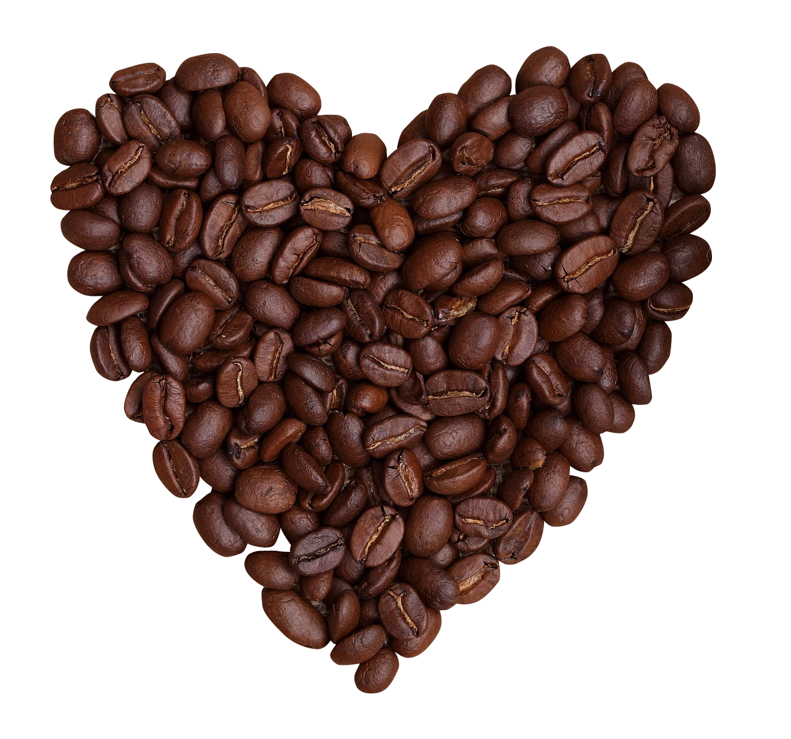

Польза кофе
Кофеин повышает уровень дофамина в мозге, который заставляет нас чувствовать себя бодрее и веселее. Употребление кофе в умеренных количествах положительно влияет на центральную нервную систему: улучшает настроение, повышает физическую и умственную активность.


Сорта кофе
- Арабика (Cofféa arábica) – также называют Кофе аравийский.
- Робуста (Coffea canephora) – также называют Кофе конголезский.
- Либерика (Coffea liberica) – самый ароматный вид кофе.
- Эксцельса (Excelsa) – на самом деле является сортом Либерики.
- Стенофила (Coffea stenophylla) – высокогорный кофе Сьерра Леоне.
Цитата неизвестного кофемана
Когда остаешься один на один с чашечкой бодрящего напитка, то порой возникает ощущение, будто вся жизнь и есть эта чашка, а все остальное неважно.
